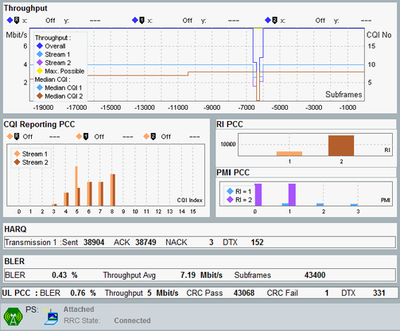

Result Overview
The results of the "Extended BLER" measurement are displayed in several different views on the "Extended BLER" tab. The result overview provides a summary of the most important results of the detailed result views.

Result overview
You can enlarge one of the diagrams in the overview and show a detailed view with additional measurement results, see "Selecting and Modifying Views". The individual results are described in the "Detailed Views" sections.
For the following "UL PCC" / "UL SCCn" BLER results, there is no "Detailed View". Option R&S CMW-KS510 is required for these results. They are displayed per uplink component carrier.
- "BLER":
Block error ratio, percentage of received uplink subframes with failed CRC check. The following formula is used:
BLER = CRC fail / (CRC pass + CRC fail) - "Throughput":
Throughput calculated from the "CRC Pass / Fail" results and the theoretical maximum uplink throughput. The following formula is used:
Throughput = CRC pass / (CRC pass + CRC fail) * theoretical max throughput
The uplink throughput indicates the average uplink throughput since the start of the measurement.
The theoretical maximum throughput is calculated from the UL settings. It is displayed, for example, in the signaling application main view. - "CRC Pass / Fail":
Number of uplink subframes with passed / failed CRC check, received since the start of the measurement. - "DTX":
Number of scheduled uplink subframes skipped by the UE.
The result is calculated from the number of expected uplink subframes and the number of received uplink subframes (CRC pass / fail results). For some configurations, the number of expected subframes is unknown and NCAP is displayed as result (for example for CDRX or scheduling type SPS).